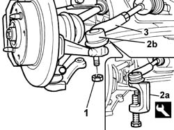

4110B10 steering links - r+r on vehicle - check tow-in/tow-out separately
- Path
- Procedures > 41 STEERING > 4110 STEERING CONTROL AND LINKAGE > 4110B steering control linkage > 4110B10 steering links - r+r on vehicle - check tow-in/tow-out separately
- Kind
- repair procedure (removal / refitting; the operation number is the code)
- Applies to
- all engines; all production periods
- Interactive page
- https://sloeber94.github.io/elrnDB-fPnd/en/#/2752783
Applies to: all engines; all production periods
 Removing
Removing
 Refitting
RefittingPlace the car on a lift.
4450B12 front or rear wheels (two) - r+r
Measure the length of the steering rods to be used. This operation must be performed to ensure the links are refitted effectively.
1. Undo the nut securing the track rod end balljoints.
2. With the help of the tool (2a), remove the track rod ends (2b) from the housings in the steering knuckles.
 | Name | Country |
|---|---|---|
2a | Extractor | 1.871.000.700 |
3. Unscrew the track rods from the steering box and remove them.

Applies to: all engines; all production periods
Refitting
RemovingFit the steering links and screw them into place on the steering box.
Tighten the links on the steering box to torque.
 | Fastening | Component | Ø | Value (daNm) |
|---|---|---|---|---|
- | Nut | ADJUSTABLE STEERING LINKS | M12 x 1.5 | 3.4 |
Check that the length of the adjustable steering rods is the same as measured during the removal.
Join the track rod ends to the steering knuckles and tighten the fixing nut to torque.
| Fastening | Component | Ø | Value (daNm) |
|---|---|---|---|---|
- | Nut | ADJUSTABLE STEERING LINKS | M10 x 1.25 | 4 |
4450B12 front or rear wheels (two) - r+r
Lower the lift and remove the vehicle.